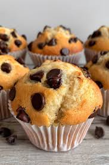

home page
Chocolate Chip Muffins

Description
These chocolate chip muffins are soft, fluffy, moist, tender and chock-full of chocolate chips! They've got that nice high bakery style dome and are just about perfection straight out of the oven.
If you’re looking for a perfectly delicious treat that whips up in just a few minutes then you’ve got to make these chocolate chip muffins! Easy to make, melt in your mouth amazingness with just the right hit of chocolate.
Ingredients
- flour
- unsalted butter
- milk
- eggs
- baking powder
- chocolate chips
- granulated sugar
- vanilla extract
Steps
- Sift the flour, salt, and baking powder into a large bowl then whisk together and set aside.
- Add the melted butter, milk, sour cream, and sugar to a bowl and mix. I like to warm the mixture up again in the microwave for about 45 seconds then mix once more but this is optional.
- Add the vanilla and eggs then whisk together once more.
- Pour the wet into the dry and mix until just combined.
- Fold in the chocolate chips. Not need to mix very much but try to distribute the chips evenly.
- Time to fill the muffin tins! You can butter and flour your tin or use muffin papers. The papers will be easy to remove but the metal on batter contact will give you a crisp edge. Fill the wells to the top for a nice high rise and sprinkle a couple chocolate chips on top of each one. Pop into the oven at 425F for 5 minutes then reduce temperature to 350F and bake for another 20 minutes or until the top is golden. You can also use a skewer to test the center.Freshly baked chocolate chip muffins in a gold muffin tin.